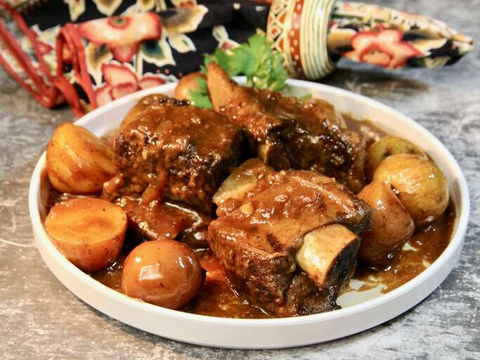

Simple Beef Short Ribs

Tender Short Ribs
What Is Beef Short Ribs?
Beef short ribs are a cut of beef that come from the brisket, chuck,
plate, or rib areas of the cow.
They consist of a short portion of the rib bone and the surrounding meat,
which can be cut in two main ways: "flanken" or "English" cut.
The "flanken" cut is made across the bone, leaving the bone just 1 to 2 inches in length,
while the "English" cut is made parallel to the bone,
leaving the bone up to 6 inches in length.
Short ribs are known for their rich,
beefy flavor and are prized for slow cooking due to their high fat content,
which makes the meat tender and succulent.
They are popular in many international cuisines and are often used for braising or slow cooking to break down the tough connective tissues
and make the meat fall apart tender.
How To Prepare
Ingredients
- 1 pound beef short ribs
- 1 teaspoon salt
- ½ teaspoon ground black pepper
- 2 tablespoons all-purpose flour
- 1 tablespoon olive oil
- 1 tablespoon butter
- 1 onion, sliced
- 1 clove garlic
- 1 (12 fluid ounce) can or bottle stout beer
- 1 cup beef stock
Steps
- Season ribs with salt and pepper. Dredge in flour until coated; shake off excess.
- Heat olive oil and butter in a Dutch oven or large skillet over medium-high heat. Cook ribs until browned, about 5 minutes per side. Remove ribs and set aside.
- Add onion and garlic to the pot; cook and stir until onion is tender, about 5 minutes. Return ribs to the pot; pour in beer while scraping the browned bits of food off the bottom of the pot. Pour in beef stock.
- Cover and simmer over low heat until ribs are very tender, about 2 hours.